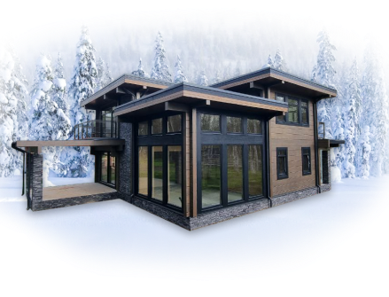

<!DOCTYPE html>
<html lang="ru">

<head>
    <meta charset="UTF-8">
    
    <link rel="stylesheet" href="assets/css/style.css">
    
    <!-- Useful meta tags -->
    <meta http-equiv="x-ua-compatible" content="ie=edge">
    <meta name="viewport" content="width=device-width, initial-scale=1, shrink-to-fit=no">
    <meta name="robots" content="index, follow">
    <meta name="google" content="notranslate">
    <meta name="format-detection" content="telephone=no">
    <link rel="shortcut icon" href="./assets/images/favicon.ico" type="image/x-icon">
    <link rel="preconnect" href="https://fonts.googleapis.com">
    <link rel="preconnect" href="https://fonts.gstatic.com" crossorigin>
    <link href="https://fonts.googleapis.com/css2?family=Inter:wght@100..900&display=swap" rel="stylesheet">
    <title>Документ</title>
    
    
</head>

<body>
    <div class="page">

        <main class="main">
            
            <section style="background-color: black;">
                <div class="container">
            
                </div>
            </section>
            
            <aside class="new_sidebar">
                <button class="aksii-banner__close">
            		<svg width="9" height="9" viewBox="0 0 9 9" fill="none" xmlns="http://www.w3.org/2000/svg">
            			<path opacity="0.5" d="M1.65039 1.03418L8.32031 7.7041M8.32031 1.03418L1.65039 7.7041" stroke="white" stroke-width="1.33398" stroke-linecap="round" stroke-linejoin="round" />
            		</svg>
            	</button>
                <div class="flex-column">
                    <picture class="img-wrap top">
                        <source srcset="./assets/images/mobile-top.png" media="(max-width: 576px)">
                        
                    </picture>
                    <picture class="img-wrap center">
                        <source srcset="./assets/images/Mobile-center.png" media="(max-width: 576px)">
                        
                    </picture>
                    <h2 class="new_sidebar_title"><span>Новый дом -</span>Новая глава в жизни</h2>
                    <picture class="img-wrap bottom">
                        <source srcset="./assets/images/mobile-bottom.png" media="(max-width: 576px)">
                        
                    </picture>
                </div>
            </aside>        </main>

    </div>
    <script src="assets/js/app.js"></script>
</body>
</html>

